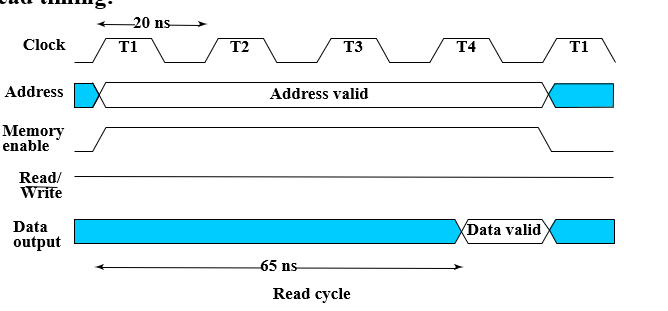
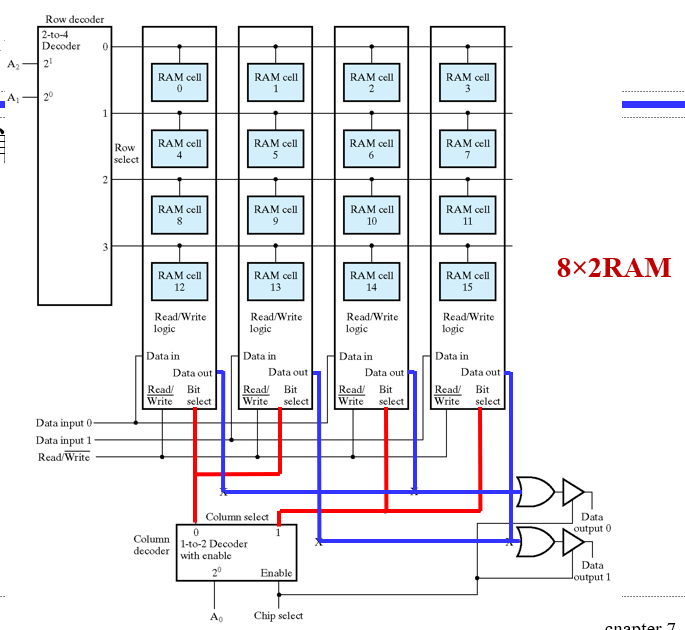
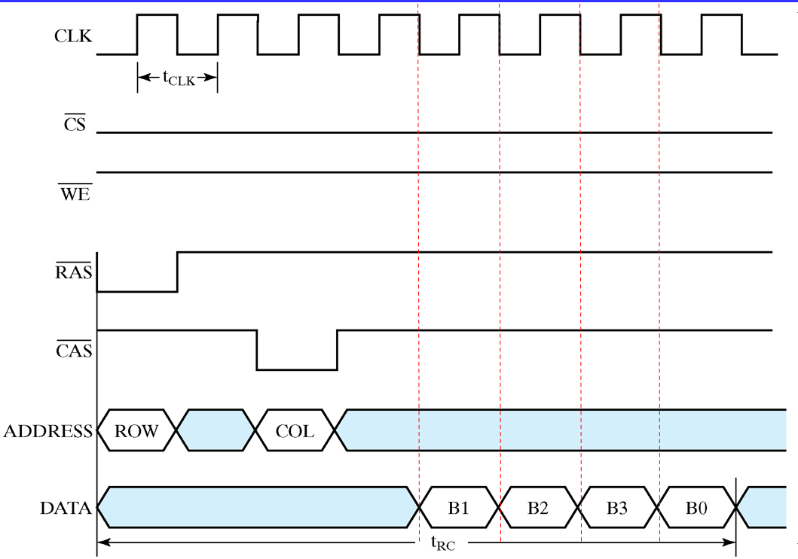
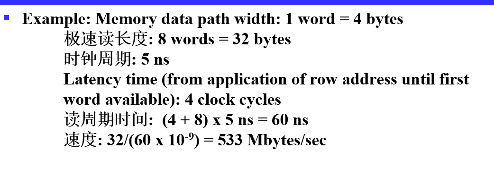

Chapter 7 Memory Basics
Memory Definition
- 内存：存储单元的集合，以及向它们传输信息和从它们传输信息的必要电路
- 内存组织：内存的基本架构结构，以访问数据的方式表示
- 随机存取存储器 （RAM）： 一种组织起来的存储器，可以在不依赖于所选特定单元的时间内将数据传输到任何单元（或单元集合）或从任何单元（或单元集合）传输数据。
-
内存地址：标识特定内存元素（或元素集合）的位向量。
-
typical data elements
- bit: a single binary digit
- byte: eight bits accessed together 8bit一字节
- word: 二进制bit集合，大小通常是2的幂次个byte，不同计算机字长可能不同
- memory data： 要存储到内存或从内存访问的内容
- 内存操作：如读取写入等等
Memory Organization
Organized as an indexed array of words. Value of the index for each word is the memory address.
Memory Block Diagram
- $k$ address lines decoded to address $2^k$ words of memory
- each word is $n$ bits
- Read and Write are single control lines by 1 bit.
Memory Organization Example
地址0-7，每个地址存8位数据
Memory Operation Timing
通常是异步的
- 读

- 写
- Critical times measured with respect to edges of write pulse (1-0-1):
- Address must be established at least a specified time before 1-0 and held for at least a specified time after 0-1 to avoid disturbing stored contents of other addresses 地址应该在读写开始前和结束后都保持一定时间的稳定
- Data must be established at least a specified time before 0-1 and held for at least a specified time after 0-1 to write correctly 数据同理
- 读访问时间和写周期时间必须要为时钟周期的固定倍数，这是因为读写操作的起始和结束是通过是时钟边沿控制的
- 在读操作后，前65ns为读访问时间，此之后数据才完整有效
RAM
- type of random access memory：
- static,SRAM：速度快，成本高，information stored in latches，断电丢失信息
-
dynamic,DRAM：通过电容存储电荷标志0和1，缺点是会漏电，数据会丢失，因此需要定时刷新，优点是所需元件少（一位只需一个晶体管加一个电容），密度高，成本低
-
dependence on power supply
- volatile：掉电易失，lose stored information when power turned off，RAM都是
- non-volatile：研发ing，磁盘
Static RAM 异步器件
- Storage Cell
- select为0，输入被disable全0，SR保持状态，输出也被disable，对输出结果不造成影响
-
select为1，有条件修改SR中值并输出
-
Bit Slice位片: Represents all circuitry that is required for $2^n$ 1-bit words
内存操作基本要求：每次只对一位进行操作，因此每次word select使能一位，然后将最后得到结果取或
-
$2^n$-Word $\times$ 1-Bit RAM IC:
-
Decoder: decodes the n address lines to $2^n$ word select lines
-
A 3-state buffer on the data output permits RAM ICs to be combined into a RAM with $c \times 2^n$ words
-
Coincident Selection:行列译码
- Word select becomes Row select
- Bit select becomes Column select
如1001，10使能row 2，01使能column 1
- $8\times2$RAM,一次操作两位

- Making Larger Memories：把$4\times n$变成$16\times n$
- 自扩展，即输出的字宽没变。高位选择RAM芯片，其余三态门输出为高阻态
- Making Wider Memories：增加位宽，每块 RAM 芯片就代表最后输出的某一位，将地址线和控制线并行连接。
Dynamic RAM 同步
- Read:大容器初始置为已知中间水位。若小容器1，大容器由于水位比小容器低，会微微上升，可以认为读了1；若小容器0，大容器水位比小容器高，会微微下降，认为是读了0
- 在这个操作中，外部容器变化不会很大，但足以检测到，但是小容器中原本存储的数据被破坏，因此要进行恢复
- 恢复1：水泵将大容器注满，之后通过阀门
- 恢复0：水泵排空大容器
- 对实际存储单元，还有其他电荷流动路径，可以理解为存储容器上的小孔(leak)，使得容器水位下降到一定水平，使得即使存储了1，打开阀门后大容器水位不仅没有可观测变化，甚至还可能下降，因此我们需要周期性填满存储值为1的小容器，该操作称为存储单元的刷新。
写数据时直接充放电即可；读取时，需要有电路判断电压高低，这时会消耗电荷,要将破坏性读转为非破坏性（将值写回去）
- Bit Slice:检测放大器用于将 C 上的微小电压变化更改为 H 或 L，连接B、C和检测放大器输出，使破坏性读取转换为非破坏性读取
- 需要做定时刷新（电容会自己放电） - Refresh Controller and Refresh Counter
- 分别输入行地址、列地址（实际上是一组引脚，只是被 DRAM 分开输入），对应 $\overline{RAS},\overline{CAS}$（控制引脚，告诉芯片现在输入的是行/列地址）
- read时序：行地址寄存器读入，列地址计数器读入，地址分两次输入。所选行所有位都被重新存储了一遍
- write：在写操作，所选行其他没有被选中的单元将原来存储值又存储了一次；read变0后，数据在列地址选择时间相同的时间间隔内有效
-
types
-
Synchronous DRAM (SDRAM) 随系统时钟
- 用于寻址每个时钟周期要传输的内部数据
- 一次可以读出多个数据 beginning with the column address counts up to column address + burst size – 1
- burst size=4 极速读长度：输出字节的数量

- 计算例子

-
Double Data Rate SDRAM (DDR SDRAM) 上升沿和下降沿都可以进行一次操作，提升一倍吞吐量
-
RAMBUS® DRAM (RDRAM)
-
DRAM读取耗时长
-
由于列地址每个周期需要加1，因此列地址使用计数器访问，为传输提供连续的列地址